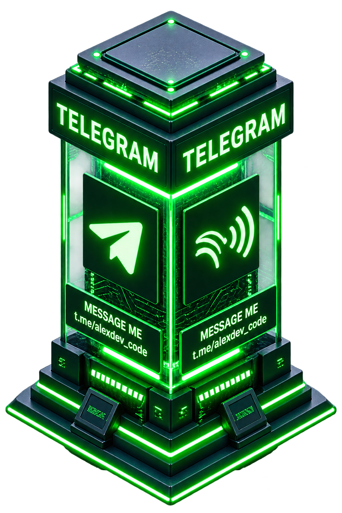
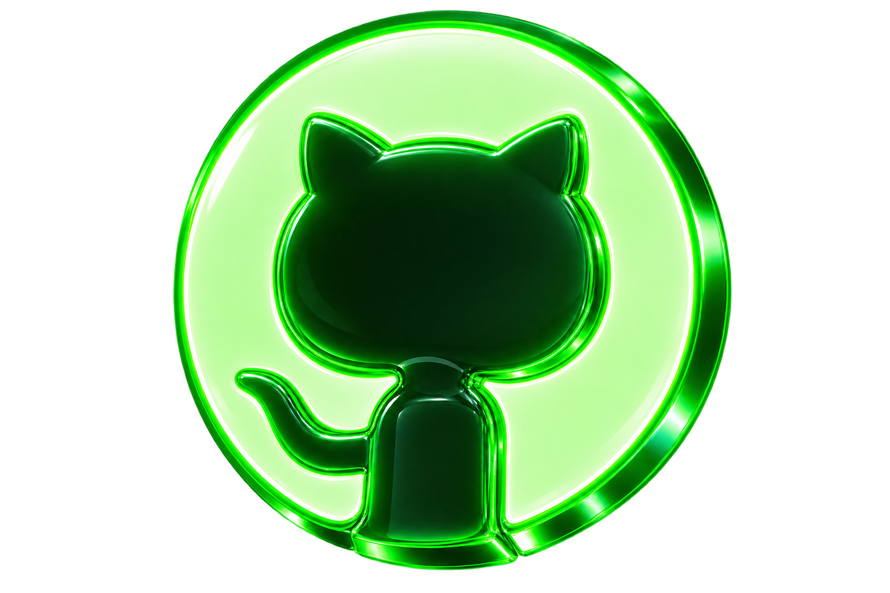
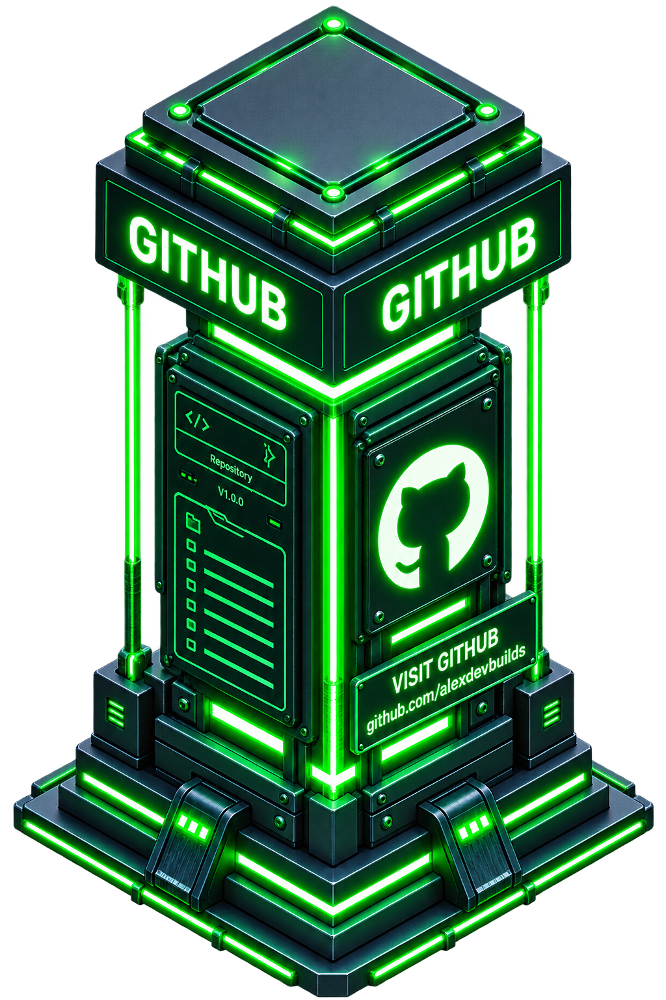

AI Creative Designer
Fluid interfaces that respond in milliseconds.



Have an idea in mind? Pick a channel — I reply fast.
Github
Explore my work
Telegram
Fastest way to reach me
Email
For business & collabs